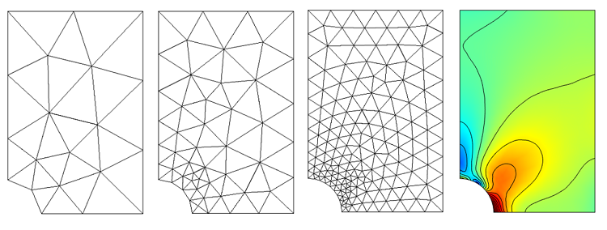

Math and Me
My love affair with math started when I was young. I was very interested in the subject. Exploring the boundaries of what was being taught by my teachers. Somewhere in my teenage years I abandoned my passion for math for less substantials pursuits. Thankfully, when I returned to school in 2009 I revisited the subject and fell back in love. My interest in math lies in mainly in three separate camps: probalbilty and statistics, data analysis and visualization, and numerical analysis.
Statistics and Probability

There are two main groups of statisticians. There are those that subscribe to the Bayesian school of thought. The Bayesians are those that follow Bayes theorem and use conditional probabilities to include informations about prior observations. The second group are the Frequentists. These statisticians do not consider any previous information. Of these two camps, I find my self in the first camp; I am a Bayesian.
Data Visualization
To me, data visualization is such an incredible form of art. From a beautiful representation of how the Chinese goverment is comprised to the live reporting of tweets during the State of the Union address we have many examples of how abstract information can be aggregated and formed into an easily digestible image or interaction. I have made a few data visualizations myself some made with Google Maps. To the right is a donut chart composed of updating random values made with D3.js.
Numerical Analysis

Numerical analysis is the study of method that approximate the solution to mathematical problems. It is often used to solve problems that cannot be solved analytically. Numerical analysis is a discipline that has been around for centuries. Research in this area has been greatly accelerated in the past 50 years because of the rapid increase in computing power. As this is the case there are numerous open problems and the opportunity for research is great. I have been studying this subject now for four years including three years of teaching assistant duties in numerical analysis classes.